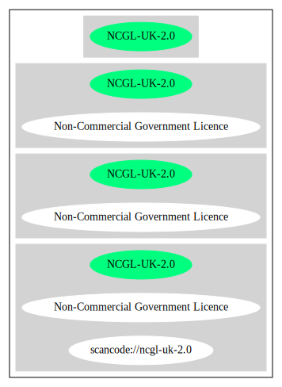

Key |
Value |
|---|---|
Fullname |
Non-Commercial Government Licence |
Shortname |
NCGL-UK-2.0 |
Rating |
Unknown, probably Attention or Stop or No-Go |
SPDX: http://spdx.org/licenses/NCGL-UK-2.0.json
https://github.com/spdx/license-list-XML/blob/master/src/Apache-2.0.xml
{
"__impliedNames": [
"NCGL-UK-2.0",
"Non-Commercial Government Licence"
],
"__impliedId": "NCGL-UK-2.0",
"facts": {
"SPDX": {
"isSPDXLicenseDeprecated": false,
"spdxFullName": "Non-Commercial Government Licence",
"spdxDetailsURL": "http://spdx.org/licenses/NCGL-UK-2.0.json",
"_sourceURL": "https://spdx.org/licenses/NCGL-UK-2.0.html",
"spdxLicIsOSIApproved": false,
"spdxSeeAlso": [
"https://github.com/spdx/license-list-XML/blob/master/src/Apache-2.0.xml"
],
"_implications": {
"__impliedNames": [
"NCGL-UK-2.0",
"Non-Commercial Government Licence"
],
"__impliedId": "NCGL-UK-2.0",
"__isOsiApproved": false,
"__impliedURLs": [
[
"SPDX",
"http://spdx.org/licenses/NCGL-UK-2.0.json"
],
[
null,
"https://github.com/spdx/license-list-XML/blob/master/src/Apache-2.0.xml"
]
]
},
"spdxLicenseId": "NCGL-UK-2.0"
}
},
"__isOsiApproved": false,
"__impliedURLs": [
[
"SPDX",
"http://spdx.org/licenses/NCGL-UK-2.0.json"
],
[
null,
"https://github.com/spdx/license-list-XML/blob/master/src/Apache-2.0.xml"
]
]
}